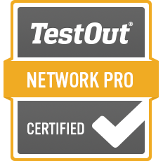
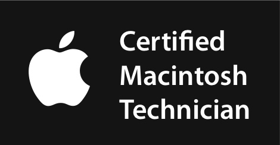

Hardware Technicians are typically always in demand as new technologies emerge, bringing about new hardware issues. Companies will always need a hand when it comes to PC maintenance and repair, hardware upgrades, security, hardware support, and user support. With these categories in high demand, there are many certifications that, when finished, will grant you credentials proving you are an expert of your specific field, giving you a nice “golden ticket” to show off your proficiency in the skill. Below are the top 3 PC Hardware Certifications that are often looked for by big companies.

The CompTIA A+ certification is the most popular certification in the industry as it covers a wide range of IIT topics related to hardware including information about specific operating systems, hardware components and troubleshooting, mobile devices and configuration, security best practices, and more. The exam is a multiple choice exam with some drag-and-drop questions. It also includes a few performance-based questions targeting practical issues to be troubleshooted in simulated environments. The cost to take toe CompTIA A+ certification exam is $253 as of 2024
If you wish to get a PC hardware certification proving proficiency in Windows, IOS, and Mac hardware, paired with virtual simulations to demonstrate hands on troubleshooting, then the is the certification for you. The exam for the certification is taken online and typically has a time limit of 2 hours. TestOut provides online training and exercises along with simulated labs to better prepare you for the certification exam. The cost for the exam is included in TestOut’s courseware bundle priced at $499 USD
If Windows isn’t your forte, this certification might present itself as an alternative option as it shifts the focus from Windows machines to Apple’s Mac and Mac hardware. ACMT covers troubleshooting Mac issues, repair techniques, and the ability to handle and repair both portable Mac Systems, along with Desktop systems. To get this certification, one must first complete a training course offered by an Apple Authorized Training Provider (AATP) and then complete the ACMT Certification Exam. As of 2024, the cost for the ACMT exam is a flat fee of $149 USD for a single attempt.